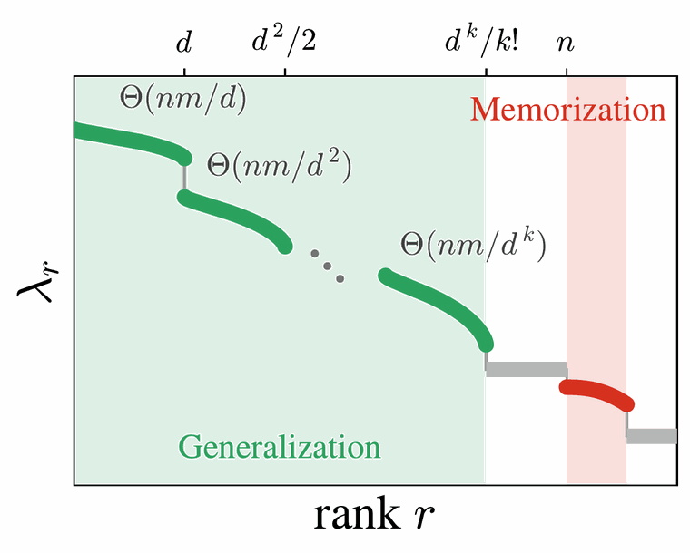

First Learn, Then Memorize: The Spectral Bias of Diffusion Models
Preprint, 2026 Preprint
Diffusion models trained on a finite dataset first learn to generate novel, high-quality samples and only much later collapse onto their training set. We show that the training dynamics of the score are governed — exactly, and at any width — by the Gram matrix of the Neural Tangent Kernel evaluated on the noisy training data, and that using $m$ noise realizations per sample splits its spectrum into two bulks. The large eigenvalues carry the global features of the target distribution; the smallest ones, created by the repeated noising, align with sample-specific noise directions and set a memorization timescale parametrically larger in the dataset size $n$. We solve the spectrum analytically in the lazy high-dimensional limit, and find the same two-bulk structure in convolutional NTKs on CelebA and in finite-width U-Nets, where truncating the Gram matrix tunes the generalization–memorization transition.
BibTeX
@misc{urfin2026learnmemorizespectralbias,
title={First Learn, Then Memorize: The Spectral Bias of Diffusion Models},
author={Raphaël Urfin and Tony Bonnaire and Giulio Biroli and Marc Mézard},
year={2026},
eprint={2609.35377},
archivePrefix={arXiv},
primaryClass={cs.LG},
url={https://arxiv.org/abs/2609.35377},
}